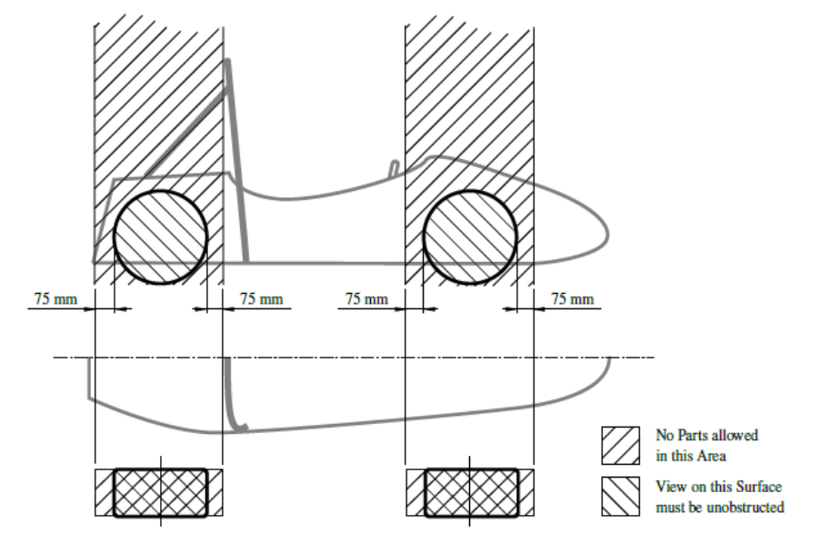

General Design Requirements¶
T2.1 Vehicle Configuration¶
T2.1.1¶
The vehicle must be designed and fabricated in accordance with good engineering practices.
T2.1.2¶
The vehicle must be open-wheeled, single seat and open cockpit (a formula style body) with four wheels that are not in a straight line.
T2.1.3¶
Open wheel vehicles must satisfy the following (see also Figure 4): - The wheel/tyre assembly must be unobstructed when viewed from the side. - No part of the vehicle may enter a keep-out-zone defined by two lines extending vertically from positions 75 mm in front of and 75 mm behind the outer diameter of the front and rear tyres in the side view of the vehicle, with steering straight ahead. This keep-out zone extends laterally from the outside plane of the wheel/tyre to the inboard plane of the wheel/tyre assembly.

Figure 4: Keep-out-zones for the definition of an open-wheeled vehicleT2.2 Bodywork¶
T2.2.1¶
There must be no openings through the bodywork into the driver compartment other than that required for the cockpit opening. Minimal openings around the front suspension and steering system components are allowed.
T2.2.2¶
In any section view, parallel to the centre line of the car, in front of the cockpit opening and outside the area defined in T8.2, all parts of the bodywork must have no external concave radii of curvature. Any gaps between bodywork and other parts must be reduced to a minimum.
T2.2.3¶
Enclosed chassis structures and structures between the chassis and the ground must have two venting holes of at least 25 mm diameter in the lowest part of the structure to prevent accumulation of liquids. Additional holes are required when multiple local lowest parts exist in the structure.
T2.2.4¶
All edges of the bodywork that could come into contact with a pedestrian must have a minimum radius of 3 mm.
T2.2.5¶
The bodywork in front of the front wheels must have a radius of at least 38mm extending at least 45° relative to the forward direction, along the top, sides and bottom of all affected edges.
T2.3 Suspension¶
T2.3.1¶
The vehicle must be equipped with fully operational front and rear suspension systems including shock absorbers and a usable wheel travel of at least 50mm and a minimum jounce of 25 mm with driver seated.
T2.3.2¶
The minimum static ground clearance of any portion of the vehicle, other than the tyres, including a driver, must be 30mm.
T2.3.3¶
All suspension mounting points must be visible at technical inspection, either by direct view or by removing any covers.
T2.4 Wheels¶
T2.4.1¶
Any wheel mounting system that uses a single retaining nut must incorporate a device to retain the nut and the wheel in the event that the nut loosens. A second nut (“jam nut”) does not meet these requirements.
T2.4.2¶
Standard wheel lug bolts and studs must be made of steel or titanium and are considered engineering fasteners. Teams using modified lug bolts, studs or custom designs will be required to provide proof that good engineering practices have been followed in their design. Wheel lug bolts and studs must not be hollow.
T2.4.3¶
Aluminium wheel nuts may be used, but they must be hard anodized and in pristine condition.
T2.4.4¶
At all extremes of suspension and steering travel, the static radial clearance between the wheel rim and any non-rotating component must be >=5mm.
T2.4.5¶
Extended or composite wheel studs are prohibited.
T2.4.6¶
Wheel spacers are permitted. Laminated or multiple spacers per wheel are not permitted.
T2.4.7¶
The wheels for dry tyres and wet tyres may be different but must be the same for all dry tyres and all wet tyres.
T2.5 Tyres¶
T2.5.1¶
Vehicles must have two types of tyres as follows:
- Dry tyres - The tyres on the vehicle when it is presented for technical inspection are defined as its “dry tyres”.
Wet tyres - Wet tyres may be any size or type of treaded or grooved tyre provided:
i. The tread pattern or grooves were moulded in by the tyre manufacturer or were cut by the tyre manufacturer or their appointed agent. Any grooves that have been cut must have documentary proof that it was done in accordance with these rules.
ii. There is a minimum tread depth of 2.4 mm.
T2.5.2¶
Tyres on the same axle must have the same manufacturer, size and compound.
T2.5.3¶
Tyre warmers are not allowed.
T2.5.4¶
Special agents that increase traction may not be added to the tyres or track surface.
T2.5.5¶
Single-use plastic tyre covers, e.g. cling film, are prohibited.
T2.6 Steering¶
T2.6.1¶
Steering systems using cables or belts for actuation are prohibited.
[DV ONLY] This does not apply for autonomous steering actuators.
T2.6.2¶
The steering wheel must directly mechanically actuate the front wheels.
T2.6.3¶
The steering system must have positive steering stops that prevent the steering linkages from locking up. The stops must be placed on the rack and must prevent the tyres and rims from contacting any other parts. Steering actuation must be possible during standstill.
T2.6.4¶
Allowable steering system free play is limited to a total of 7° measured at the steering wheel.
T2.6.5¶
The steering wheel must be attached to the column with a quick disconnect. The driver must be able to operate the quick disconnect while in the normal driving position with gloves on.
T2.6.6¶
The steering wheel must be no more than 250mm rearward of the front hoop. This distance is measured horizontally, on the vehicle centreline, from the rear surface of the front hoop to the forward most surface of the steering wheel with the steering in any position.
T2.6.7¶
The steering wheel must have a continuous perimeter that is near circular or near oval. The outer perimeter profile may have some straight sections, but no concave sections.
T2.6.8¶
In any angular position, the top of the steering wheel must be no higher than the top-most surface of the front hoop.
T2.6.9¶
The steering rack must be mechanically attached to the Primary Structure.
T2.6.10¶
Joints between all components attaching the steering wheel to the steering rack must be mechanical and visible at technical inspection. Bonded joints without a mechanical backup are not permitted. The mechanical backup must be designed to solely uphold the functionality of the steering system.
T2.6.11¶
Rear wheel steering, which can be electrically actuated, is permitted if mechanical stops limit the range of angular movement of the rear wheels to a maximum of 6°. This must be demonstrated with a driver in the vehicle and the team must provide the equipment for the steering angle range to be verified at technical inspection.
T2.7 Wheelbase¶
T2.7.1¶
The vehicle must have a wheelbase of at least 1525 mm.
T2.8 Track and Rollover Stability¶
T2.8.1¶
The smaller track of the vehicle (front or rear) must be no less than 75 % of the larger track.
T2.8.2¶
The track and centre of gravity of the vehicle must combine to provide adequate rollover stability.